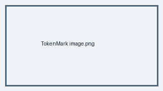

[en] Einführung
[en] Hallo Welt. Dies ist ein Link mit stabiler Text-ID.
[en] Link- [en] Punkt eins
- [en] Punkt zwei mit
inline code
[en] Ein wichtiger Hinweis.
[en] Hinweis
[en] Dieser Admonition-Text ist übersetzbar.
| [en] Spalte A | [en] Spalte B |
| [en] Alpha | [en] Beta |
[en]

[en] Alternativtextprint("nicht übersetzen")
[en] Mehr Text.